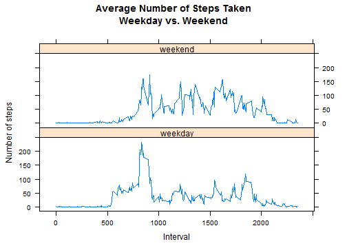

require(dplyr)
require(lattice)
rawData<-read.csv("activity.csv")
rawTable <- tbl_df(rawData)
rawTable$date<-as.Date(rawTable$date,"%Y-%m-%d")
totalStep<-rawTable %>%
group_by(date) %>%
summarise(sum(steps, na.rm=TRUE))
names(totalStep) <- c("date", "totalstep")
Plot histogram of the total number of steps taken each day
barplot(totalStep$totalstep, axis.lty = 1, names.arg = totalStep$date,
xlab = "Date", ylab = "Steps",
main = "Number of Steps Taken Each Day")
Report the mean total number of steps taken per day
mean(totalStep$totalstep)
## [1] 9354.23
Report the median total number of steps taken per day
median(totalStep$totalstep)
## [1] 10395
intervalStep<-rawTable %>%
group_by(interval) %>%
summarise(mean(steps, na.rm=TRUE))
names(intervalStep) <- c("interval","mean")
Plot a time series plot of the 5-minute interval and the average number of steps taken, averaged across all days
plot(intervalStep$interval, intervalStep$mean, type="l",
xlab="5-minute Interval", ylab="Average number of steps taken",
main="Average number of steps taken across all days")

Report the 5-minute interval, on average across all the days in the dataset, contains the maximum number of steps
intervalStep[which.max(intervalStep$mean),]
## Source: local data frame [1 x 2]
##
## interval mean
## 104 835 206.1698
Report the total number of missing values in the data
sum(!complete.cases(rawTable))
## [1] 2304
Create a new dataset, called newRawTable, that is equal to the original dataset but with the missing data filled in.
Strategy for filling the missing data:
newRawTable <- rawTable %>%
left_join(intervalStep, by="interval") %>%
mutate(steps=ifelse(is.na(steps),mean,steps))
Plot a histogram of the total number of steps taken each day based on the new dataset
newTotalStep<-newRawTable %>%
group_by(date) %>%
summarise(sum(steps, na.rm=TRUE))
names(newTotalStep) <- c("date", "totalsteps")
barplot(newTotalStep$totalstep, axis.lty = 1, names.arg = newTotalStep$date,
xlab = "Date", ylab = "Steps",
main = "Number of Steps Taken Each Day")
 Report the mean total number of steps taken per day
Report the mean total number of steps taken per day
mean(newTotalStep$totalstep)
## [1] 10766.19
Report the median total number of steps taken per day
median(newTotalStep$totalstep)
## [1] 10766.19
Describe impact of imputing missing data on the estimates of the total daily number of steps
Create a new factor variable in the dataset with two levels -- "weekday" and "weekend" indicating whether a given date is a weekday or weekend day.
weekdayRawTable <- rawTable %>%
mutate(weekday = ifelse(
weekdays(date) == "Saturday" | weekdays(date)=="Sunday",
"weekend",
"weekday")) %>%
mutate(weekday = factor(weekday))
Make a panel plot containing a time series plot of the 5-minute interval and the average number of steps taken, averaged across all weekday days or weekend days.
weekdayIntervalStep<-weekdayRawTable %>%
group_by(interval, weekday) %>%
summarise(mean(steps, na.rm=TRUE))
names(weekdayIntervalStep) <- c("interval","weekday", "mean")
p <- xyplot(mean ~ interval | weekday, data=weekdayIntervalStep,
type = 'l',
layout=c(1, 2),
main="Average Number of Steps Taken\nWeekday vs. Weekend",
xlab="Interval",
ylab="Number of steps")
print (p)

Based on the plot, it suggests that there is a difference of activity pattern in weekend and weekday: